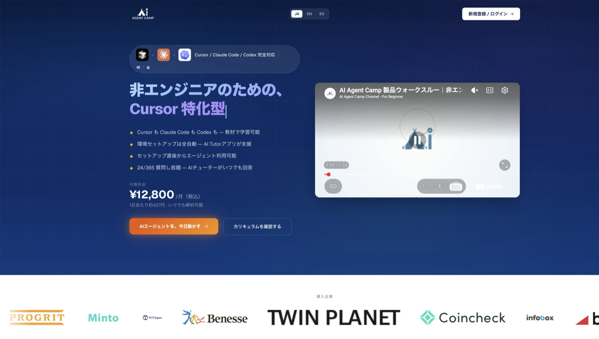
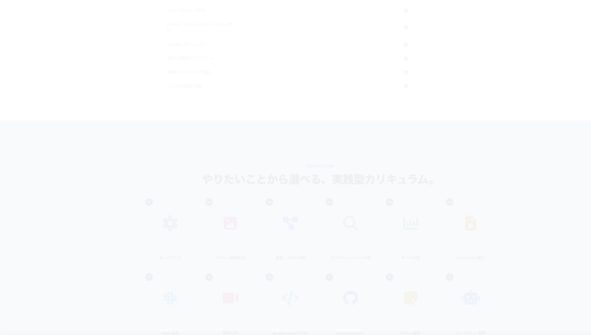

AI Agent Campは、非エンジニア向けのClaude Code特化型オンライン講座です。Cursor・Claude Code・Codexに対応し、環境セットアップの自動化と24時間AIチューターでAIエージェントを業務に使うことを目指します。結論：「ターミナルや環境構築で止まる非エンジニア」が、実務レベルのエージェント活用を短期で試したいなら検討の価値あり。一方、プログラミング基礎から体系的に学びたい人や、ツール代を抑えて独学したい人は別ルートが向きます。料金・向き不向き・比較・受講の流れを2026年6月時点で整理します。
向いている人・向いていない人
| 向いている人 | 向いていない人 |
|---|---|
| 非エンジニアで、AIエージェントを業務に活かしたい | プログラミング基礎からゼロから理論を学びたい |
| 環境構築・ターミナルでつまずいて止まった経験がある | 月額12,800円＋ツール代をかけたくない |
| スライド作成・データ分析・Slack連携など実務タスクから入りたい | 資格試験の出題範囲の網羅だけが目的（試験対策専用教材の方が向く） |
| Cursor / Claude Code を実践レッスン付きで試したい | エンジニアとして大規模開発の専門スキルを深めたい |
当てはまる方は無料登録から、まずカリキュラムとセットアップの流れを確認するのが現実的です。
AI Agent Campとは
AI Agent Campは、ai-agent.camp で提供されるAIエージェント特化型のオンライン講座です。公式では「非エンジニアのためのClaude Code特化型講座」と位置づけ、Cursor / Claude Code / Codex の3ツール向け教材を用意しています（2026年6月時点）。
よくある誤解は2つ。①「ChatGPTの使い方講座」と同一視すること——中心はチャットではなく、エージェントがPC上のツールを操作するワークフローです。②講座料にツール代込みと思うこと——月額12,800円は講座料のみで、Cursor等のサブスクは別途必要です。
料金は月額12,800円（いつでも解約可）。公式では25種類以上・200以上の実践レッスン、全コース修了の目安50〜60時間を掲示しています。
主な特徴
1クリックセットアップ
AI Tutorアプリが環境構築を支援。技術知識が少ない人でも初日からエージェントを動かす設計。
実践型カリキュラム
セットアップ、図表作成、データ分析、Slack連携、エージェント開発など18モジュールから選択可能。
24/365 AIチューター
専用AIチューターが質問に回答。深夜のつまずきをそのまま放置しにくい。
3ツール対応
Cursor・Claude Code・Codexそれぞれ向けの教材。好みのツールで学習可能。
公式サイトでは、ベネッセ・コインチェック・プログリットなどの法人導入事例や参加者の声も掲載されています。Startale株式会社では研修後に半数以上が作業効率向上と回答したと公式が紹介しています（2026年6月時点）。

独学・他講座との比較
| 学習方法 | 料金感 | 強み | 弱み・注意点 |
|---|---|---|---|
| AI Agent Camp | 月額12,800円＋ツール代 | 環境構築支援・実践レッスン・AIチューター・エージェント特化 | 資格試験の網羅学習には不向き。ツール代が別 |
| Cursor等の独学 | ツール代のみ（月数千円程度） | コスト最小。自分のペースで進められる | 環境構築・手順で止まりやすい。教材の選定が自己責任 |
| 大手AIスクール（一般） | 一括数十万円〜 | カリキュラム固定・同期学習・メンター | 高額・長期契約が多い。エージェント特化でない場合あり |
| Udemy等の単発講座 | 数千〜数万円（買い切り） | 特定テーマを安価に試せる | 更新が止まる・質問サポートが弱い・エージェント実務まで届かないことも |
使い分け：まず生成AIパスポートやG検定で基礎を固め、実務のエージェント活用はAI Agent Campまたは独学で深める、という二段構えが現実的です。

G検定・資格学習との組み合わせ
AI Master読者向けに、資格学習と並行する流れの目安です。詳細は学習ロードマップも参照してください。
フェーズ1：基礎の言語化（並行可）
フェーズ2：実務ツールに触れる
- 環境を動かす AI Agent Campでセットアップ〜初回レッスン。独学ならCursor公式ドキュメントから
- 業務に近いモジュールを1つ 例：スライド生成、データ分析、メール自動化など、今の仕事に直結するテーマを1つ完了
フェーズ3：キャリアに接続
- ポートフォリオ・実績に落とす AIポートフォリオに、自動化した業務フローや成果を記載
- 職種軸で次の学習を選ぶ AIエンジニア志向ならPython基礎も、ビジネス職ならAIプロダクトマネージャー記事で役割を確認
受講開始の流れ
まずはステップ1〜2で、自分の環境でエージェントが動くか確認するのがおすすめです。
- 新規登録（Googleアカウント） 公式サイトからアカウント作成。決済はStripe経由（2026年6月時点）。
- AI Tutorで環境セットアップ 1クリックセットアップの案内に従い、Cursor / Claude Code / Codexのいずれかを準備。
- 関心のあるモジュールを1つ完了 例：セットアップ、図表作成、Slack連携など。全60時間を目指す必要はない。
- （任意）ツールのサブスク加入 Cursor等の利用料は講座外。公式FAQで各ツールの料金を確認。
メリット・デメリット
| メリット | デメリット |
|---|---|
| 非エンジニア向けに環境構築まで含めた設計 | 月額12,800円＋Cursor等のツール代が別途必要 |
| 実務タスク（資料・分析・連携）から学べる | G検定・生成AIパスポートの出題範囲網羅には向かない |
| 24時間AIチューターで質問し放題 | 法人向け大規模開発の深い専門性まではカバーしない |
| いつでも解約可能（2026年6月時点） | 独学よりコストは高い。自分で調べられる人には過剰な場合も |
よくある質問
プログラミング経験がなくても受講できますか？
はい。公式では非エンジニア向けに設計され、環境セットアップは1クリックで完了し、専用AIチューターが24時間サポートします（2026年6月時点）。受講者の90%以上が非エンジニアと公式が掲示しています。
Cursor・Claude Code・Codexの利用料は含まれますか？
含まれません。講座の月額料金とは別に、各ツールのサブスクリプション費用が必要です（2026年6月時点・公式FAQ）。
どのくらいの時間が必要ですか？
全コース修了の目安は約50〜60時間です。1日1時間なら1〜2ヶ月、1日4時間なら約2週間。やりたいモジュールから選べるため、必要な分だけ学ぶことも可能です（2026年6月時点）。
いつでも解約できますか？
はい。月額制でいつでも解約可能です。長期契約や解約手数料はありません（2026年6月時点・公式）。
WindowsとMac、どちらでも受講できますか？
はい。Windows・Macどちらでも受講可能です。一部の機能（MCP連携など）でOS間の差異がある場合は、教材内で案内されています（2026年6月時点・公式FAQ）。